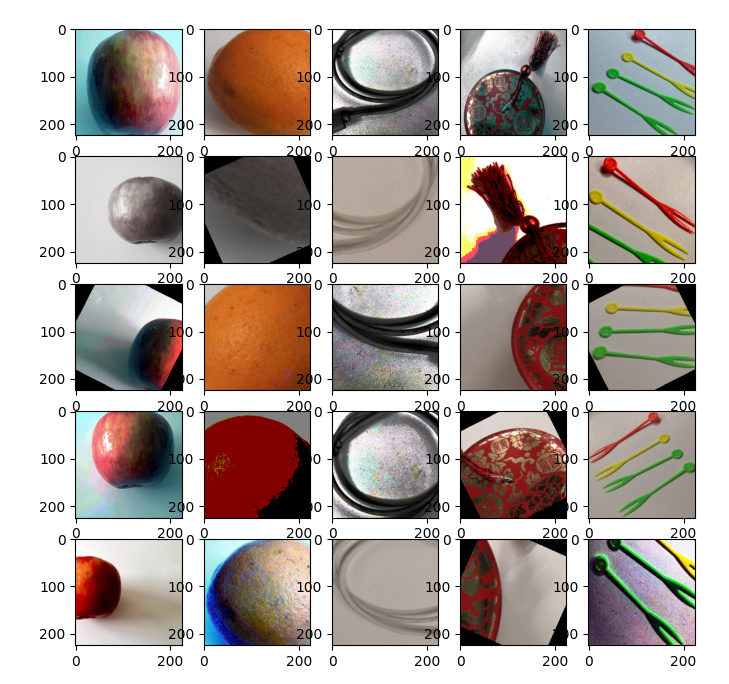

Auto Augmentation
Linux Ascend GPU CPU Data Preparation Intermediate Expert

Overview
Auto Augmentation [1] finds a suitable image augmentation scheme for a specific dataset by searching through a series of image augmentation sub-policies. The c_transforms module of MindSpore provides various C++ operators that are used in Auto Augmentation. Users can also customize functions or operators to implement Auto Augmentation. For more details about the MindSpore operators, see the API document.
The mapping between MindSpore operators and Auto Augmentation operators is as follows:
Auto Augmentation Operators |
MindSpore Operators |
Introduction |
|---|---|---|
shearX |
RandomAffine |
Horizontal shear |
shearY |
RandomAffine |
Vertical shear |
translateX |
RandomAffine |
Horizontal translation |
translateY |
RandomAffine |
Vertival translation |
rotate |
RandomRotation |
Rotational transformation |
color |
RandomColor |
Color transformation |
posterize |
RandomPosterize |
Decrease the number of color channels |
solarize |
RandomSolarize |
Invert all pixels within the specified threshold range |
contrast |
RandomColorAdjust |
Contrast adjustment |
sharpness |
RandomSharpness |
Sharpness adjustment |
brightness |
RandomColorAdjust |
Brightness adjustment |
autocontrast |
AutoContrast |
Maximize image contrast |
equalize |
Equalize |
Equalize image histogram |
invert |
Invert |
Image inversion |
Auto Augmentation on ImageNet
This tutorial uses the implementation of Auto Augmentation on the ImageNet dataset as an example.
The data augmentation policy for the ImageNet dataset contains 25 sub-policies, and each sub-policy contains two transformations. A combination of sub-policies is randomly selected for each image in a batch, and each transformation in the sub-policy is executed based on a preset probability.
Users can use the RandomSelectSubpolicy interface of the c_transforms module in MindSpore to implement Auto Augmentation. The standard data augmentation method in ImageNet classification training includes the following steps:
RandomCropDecodeResize: Randomly crop then decode.RandomHorizontalFlip: Randomly flip horizontally.Normalize: Normalize the data.HWC2CHW: Change image channel.
Add Auto Augmentation transformation after the RandomCropDecodeResize as follows:
Import related modules.
import matplotlib.pyplot as plt import mindspore.dataset as ds import mindspore.dataset.transforms.c_transforms as c_transforms import mindspore.dataset.vision.c_transforms as c_vision from mindspore import dtype as mstype
Define the mapping from the MindSpore operators to the Auto Augmentation operators.
# define Auto Augmentation operators PARAMETER_MAX = 10 def float_parameter(level, maxval): return float(level) * maxval / PARAMETER_MAX def int_parameter(level, maxval): return int(level * maxval / PARAMETER_MAX) def shear_x(level): v = float_parameter(level, 0.3) return c_transforms.RandomChoice([c_vision.RandomAffine(degrees=0, shear=(-v,-v)), c_vision.RandomAffine(degrees=0, shear=(v, v))]) def shear_y(level): v = float_parameter(level, 0.3) return c_transforms.RandomChoice([c_vision.RandomAffine(degrees=0, shear=(0, 0, -v,-v)), c_vision.RandomAffine(degrees=0, shear=(0, 0, v, v))]) def translate_x(level): v = float_parameter(level, 150 / 331) return c_transforms.RandomChoice([c_vision.RandomAffine(degrees=0, translate=(-v,-v)), c_vision.RandomAffine(degrees=0, translate=(v, v))]) def translate_y(level): v = float_parameter(level, 150 / 331) return c_transforms.RandomChoice([c_vision.RandomAffine(degrees=0, translate=(0, 0, -v,-v)), c_vision.RandomAffine(degrees=0, translate=(0, 0, v, v))]) def color_impl(level): v = float_parameter(level, 1.8) + 0.1 return c_vision.RandomColor(degrees=(v, v)) def rotate_impl(level): v = int_parameter(level, 30) return c_transforms.RandomChoice([c_vision.RandomRotation(degrees=(-v, -v)), c_vision.RandomRotation(degrees=(v, v))]) def solarize_impl(level): level = int_parameter(level, 256) v = 256 - level return c_vision.RandomSolarize(threshold=(0, v)) def posterize_impl(level): level = int_parameter(level, 4) v = 4 - level return c_vision.RandomPosterize(bits=(v, v)) def contrast_impl(level): v = float_parameter(level, 1.8) + 0.1 return c_vision.RandomColorAdjust(contrast=(v, v)) def autocontrast_impl(level): return c_vision.AutoContrast() def sharpness_impl(level): v = float_parameter(level, 1.8) + 0.1 return c_vision.RandomSharpness(degrees=(v, v)) def brightness_impl(level): v = float_parameter(level, 1.8) + 0.1 return c_vision.RandomColorAdjust(brightness=(v, v))
Define the Auto Augmentation policy for the ImageNet dataset.
# define the Auto Augmentation policy imagenet_policy = [ [(posterize_impl(8), 0.4), (rotate_impl(9), 0.6)], [(solarize_impl(5), 0.6), (autocontrast_impl(5), 0.6)], [(c_vision.Equalize(), 0.8), (c_vision.Equalize(), 0.6)], [(posterize_impl(7), 0.6), (posterize_impl(6), 0.6)], [(c_vision.Equalize(), 0.4), (solarize_impl(4), 0.2)], [(c_vision.Equalize(), 0.4), (rotate_impl(8), 0.8)], [(solarize_impl(3), 0.6), (c_vision.Equalize(), 0.6)], [(posterize_impl(5), 0.8), (c_vision.Equalize(), 1.0)], [(rotate_impl(3), 0.2), (solarize_impl(8), 0.6)], [(c_vision.Equalize(), 0.6), (posterize_impl(6), 0.4)], [(rotate_impl(8), 0.8), (color_impl(0), 0.4)], [(rotate_impl(9), 0.4), (c_vision.Equalize(), 0.6)], [(c_vision.Equalize(), 0.0), (c_vision.Equalize(), 0.8)], [(c_vision.Invert(), 0.6), (c_vision.Equalize(), 1.0)], [(color_impl(4), 0.6), (contrast_impl(8), 1.0)], [(rotate_impl(8), 0.8), (color_impl(2), 1.0)], [(color_impl(8), 0.8), (solarize_impl(7), 0.8)], [(sharpness_impl(7), 0.4), (c_vision.Invert(), 0.6)], [(shear_x(5), 0.6), (c_vision.Equalize(), 1.0)], [(color_impl(0), 0.4), (c_vision.Equalize(), 0.6)], [(c_vision.Equalize(), 0.4), (solarize_impl(4), 0.2)], [(solarize_impl(5), 0.6), (autocontrast_impl(5), 0.6)], [(c_vision.Invert(), 0.6), (c_vision.Equalize(), 1.0)], [(color_impl(4), 0.6), (contrast_impl(8), 1.0)], [(c_vision.Equalize(), 0.8), (c_vision.Equalize(), 0.6)], ]
Add Auto Augmentation transformations after the
RandomCropDecodeResizeoperation.def create_dataset(dataset_path, do_train, repeat_num=1, batch_size=32, shuffle=True, num_samples=5, target="Ascend"): # create a train or eval imagenet2012 dataset for ResNet-50 dataset = ds.ImageFolderDataset(dataset_path, num_parallel_workers=8, shuffle=shuffle, num_samples=num_samples) image_size = 224 mean = [0.485 * 255, 0.456 * 255, 0.406 * 255] std = [0.229 * 255, 0.224 * 255, 0.225 * 255] # define map operations if do_train: trans = [ c_vision.RandomCropDecodeResize(image_size, scale=(0.08, 1.0), ratio=(0.75, 1.333)), ] post_trans = [ c_vision.RandomHorizontalFlip(prob=0.5), ] else: trans = [ c_vision.Decode(), c_vision.Resize(256), c_vision.CenterCrop(image_size), c_vision.Normalize(mean=mean, std=std), c_vision.HWC2CHW() ] dataset = dataset.map(operations=trans, input_columns="image") if do_train: dataset = dataset.map(operations=c_vision.RandomSelectSubpolicy(imagenet_policy), input_columns=["image"]) dataset = dataset.map(operations=post_trans, input_columns="image") type_cast_op = c_transforms.TypeCast(mstype.int32) dataset = dataset.map(operations=type_cast_op, input_columns="label") # apply the batch operation dataset = dataset.batch(batch_size, drop_remainder=True) # apply the repeat operation dataset = dataset.repeat(repeat_num) return dataset
Verify the effects of Auto Augmentation.
# Define the path to image folder directory. This directory needs to contain sub-directories which contain the images. DATA_DIR = "/path/to/image_folder_directory" dataset = create_dataset(dataset_path=DATA_DIR, do_train=True, batch_size=5, shuffle=False, num_samples=5) epochs = 5 itr = dataset.create_dict_iterator() fig=plt.figure(figsize=(8, 8)) columns = 5 rows = 5 step_num = 0 for ep_num in range(epochs): for data in itr: step_num += 1 for index in range(rows): fig.add_subplot(rows, columns, ep_num * rows + index + 1) plt.imshow(data['image'].asnumpy()[index]) plt.show()
For better visualization, only five images are read from the dataset without performing
shuffle,Normalize, norHWC2CHWoperations.
The images above visualize the effect of Auto Augmentation. The horizontal direction displays five images in one batch, and the vertical direction displays five batches.